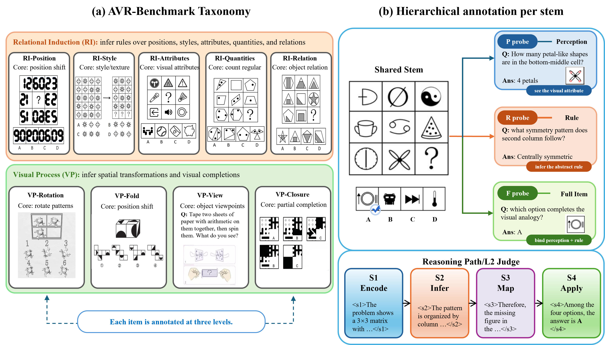
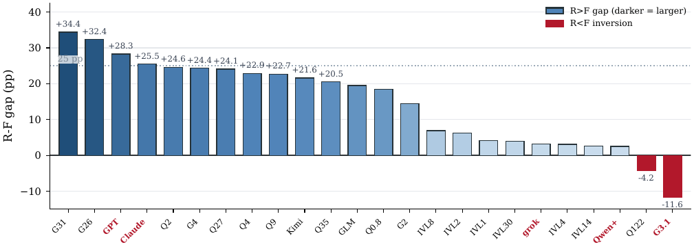
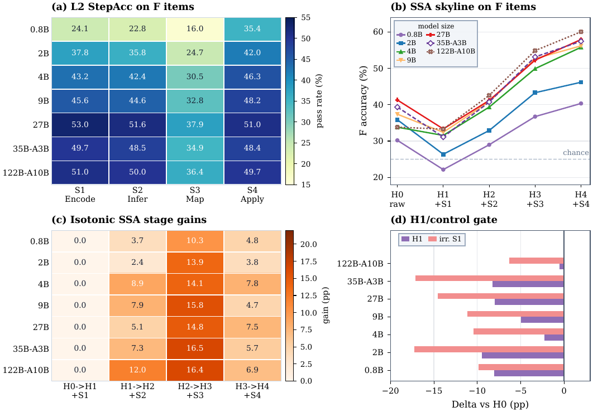
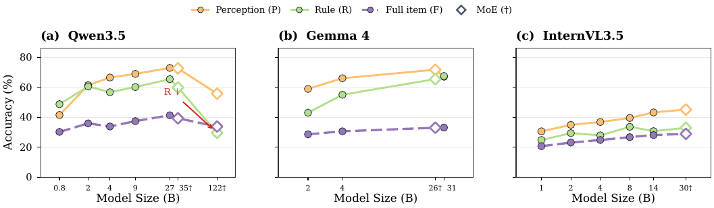
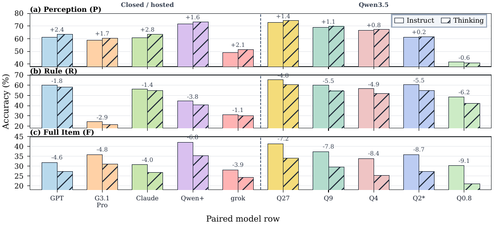
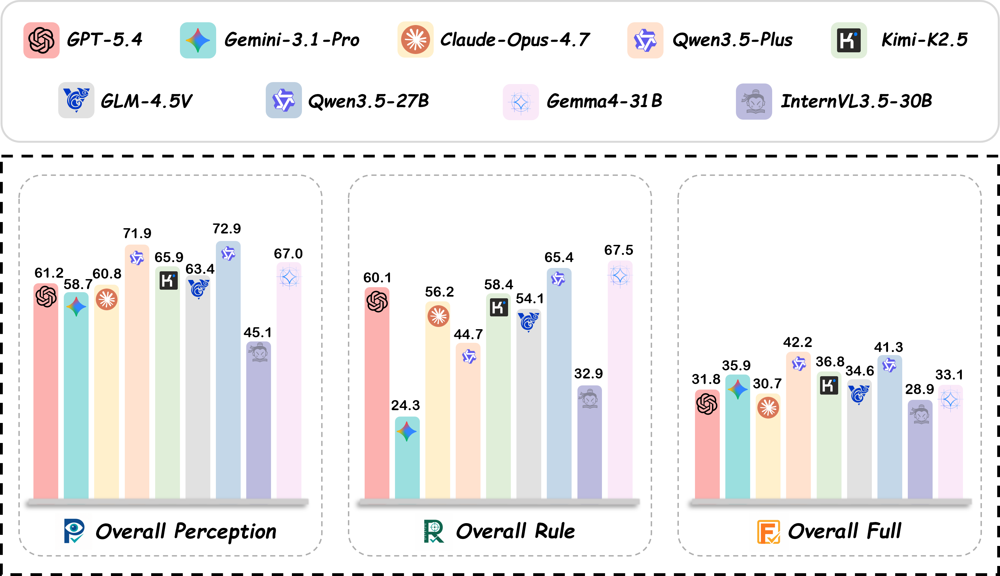

1National University of Defense Technology 2Zhejiang University 3Intelligent Game and Decision Lab
*Corresponding author

StemBind probes the same visual stem three ways — Perception (what is in the image), Rule (what pattern governs it), and Full (which option completes it) — and annotates each full item with four reasoning stages: S1 Encode, S2 Infer, S3 Map, S4 Apply.
Existing abstract visual reasoning (AVR) benchmarks collapse perception, rule induction, and answer selection into a single right-or-wrong signal, so they cannot tell why a model failed. We introduce StemBind, a shared-stem diagnostic benchmark that probes the same visual stem with three aligned questions — Perception, Rule, and Full — so a final-answer error can be attributed to a specific sub-step on the same evidence. StemBind contains 2,298 curated knowledge-light stems across nine auditable visual operations, totaling 19,533 P/R/F tasks, with each full item annotated by Sternberg's four reasoning stages (S1 Encode, S2 Infer, S3 Map, S4 Apply).
Evaluating 24 frontier MLLM configurations yields four findings: (i) rule accuracy exceeds full-item accuracy on 22 of 24 models, so most failures happen after the rule is identified; (ii) even when perception and rule are both correct on the same stem, models still answer Full incorrectly 51.2% of the time; (iii) process diagnostics and Stage-wise Stimulus Augmentation localize the dominant failure to S3 rule-to-instance mapping; and (iv) neither scaling up model size nor enabling explicit thinking reliably closes the gap. StemBind reframes AVR evaluation from final-answer ranking to locating where abstract visual reasoning breaks down.
Task split: 14,937 Perception · 2,298 Rule · 2,298 Full. Operations span the Rule-Induction family (RI-Pos, RI-Sty, RI-Attr, RI-Qty, RI-Rel) and the Visual-Processing family (VP-Fold, VP-View, VP-Rot, VP-Closure).
Rule accuracy exceeds full-item accuracy on 22 of 24 models, often by 20–34 points. Even on the strict subset where perception and rule are both correct on the same stem, models still miss the full item 51.2% of the time. The failure is behavioral rule-to-instance binding, not a missing rule.


Stage-wise judging and Stage-wise Stimulus Augmentation (SSA) both point to S3 rule-to-instance mapping: S3 is the weakest stage on every full-split row, and the largest SSA gain appears precisely when S3 alignment is injected. This is a behavioral localization, not a mechanistic claim.
Within-family scaling shifts perception and rule far more than full-item accuracy. Qwen3.5 dense peaks pre-MoE and the largest MoE variant collapses on rule, while Gemma 4 and InternVL3.5 improve on Full yet keep the R–F chasm.


Across paired direct/thinking rows, explicit thinking lifts perception on nine of ten rows but lowers both rule and full-item accuracy on every row. Longer traces aid local descriptions but break the slot-level correspondence the full item requires.

Aggregate P/R/F performance. Many models preserve stronger P or R accuracy while dropping on F.
Full per-model results and the evaluation harness are in the code repository.
@article{he2026stembind,
title = {StemBind: When MLLMs Get Lost Between Rules and Instances in Abstract Visual Reasoning},
author = {He, Xixiang and Wu, Baiqi and Li, Xingming and Cheng, Ao and Sun, Qiyao and Ji, Xuanyu and Hu, Qingyong},
journal = {arXiv preprint arXiv:XXXX.XXXXX},
year = {2026}
}